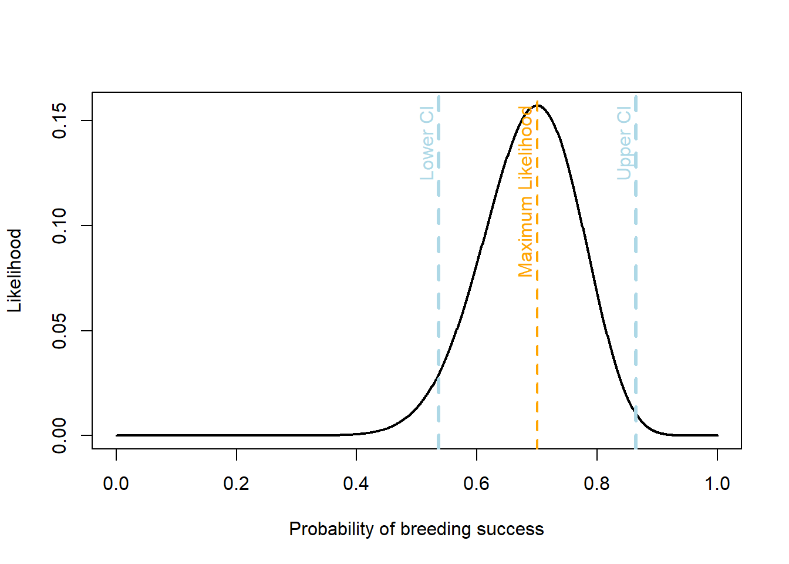

Conservation of Wildlife Populations Exercises, 3rd Edition
Chapter 1: The Big Picture
1. A newly described vertebrate species is found in a remote jungle. Given that vertebrates make up roughly 3.5% of described eukaryotic species (Fig. 1.1), and there are ~2 million described species, calculate how many vertebrate species were already known prior to this discovery.
2. Human numbers are projected to level off at 10.5 billion by 2100. If we dropped fertility to replacement levels today, why wouldn’t the population stop growing immediately? Use the concept of population momentum to explain.
3. The baseline extinction rate is estimated at 2 E/MSY (extinctions per million species per year). If there are 10,000 species of birds, how many would you expect to go extinct in a single century under “normal” deep-time conditions?
4. Current extinction rates are estimated to be 10–30 times higher than the background rate. Using the 2 E/MSY baseline, calculate the current range of extinctions per million species per year.
🌶️ The Living Planet Index (LPI) is a measure of the state of the global biodiversity trends, including vertebrate species from terrestrial, freshwater and marine habitats. The 2016 LPI reported a 58% average decline in wild vertebrate populations since 1970. In this report, a total of14,152 populations across 3,706 species were included. Based on this report, population sizes of vertebrate species have, on average, dropped by more than half in little more than 40 years. The dataset spanning years between 1970 and 2012 is public.
Questions:
Write code to visualize data and provide data summaries to answer: are all studied wildlife populations in decline? Hint: Find out how many populations show at least 58% decline. What percentage of the studied populations are decreasing in each continent?
Showcase a potential issue with the LPI. Hint: use data summaries and visualization in R to break down data, e.g., by taxa, realm, and continent. Bonus: Showcase a remedy to the issue.
Where to start? You can use program R for data analysis. Access data, summarize, and visualize it.
Stepping stones in R
(1) Open your existing RStudio Project for this course.
(2) Create a new R script and save it right away.
(3) In the script, define key variables, and load any additional packages into the R environment. When you write code, always type in the “script” window in Rstudio. You can execute commands using command-enter or control-enter in Rstudio.
Chapter 2: Gaining Reliable Knowledge
1. A sample of 16 army cutworm moths was collected from a mountain top in Yellowstone National Park. The mean length of the sampled moths is 50 mm, and the sample variance is 4 mm.
a. If the true mean length of the whole population is 20 mm and the true population variance is 15 mm, draw a target like one of those in Fig 2.1 that would depict the accuracy and precision of your sample of 16 moths relative to the true population metrics.
b. What would happen to our estimated standard error (SE) if we increased the sample size? i.e., does the SE increase, decrease or stay the same?
c. What would happen to the standard deviation (SD) if the sample size increased? i.e., does the SD increase, decrease or stay the same?
2. In the context of endangered species monitoring (Table 2.1), describe Type I and Type II errors and identify their conservation consequences in this context.
🌶️
Gaining reliable knowledge in applied wildlife population ecology requires a rigourous and formal process coupling ideas (hypotheses) to reliable measured facts. In the spirit of “embracing the uncertainty”, in this exercise, we focus on three approaches for inference: maximum likelihood estimation, null hypothesis significant testing, and Bayesian estimation.
Suppose we are tasked with monitoring griffon eggs (also spelled griffin or gryphon). We want to collect evidence on griffons breeding success. We visit 30 nests, and expect to find 20 nests with eggs. The data would look like the plot below.
But this does not tell us much. To make generalisable statements about the breeding success, we need to complete some statistical analyses. We examine this data with a simple model that makes the following assumption: at every visit to a griffon nest, we have a probability of p to find eggs.
First, we can use the dbinom() function to find the likelihood for different probabilities of a success. Then, we can find the probability with the maximum likelihood estimate.
We now have a maximum likelihood estimate for the probability of griffon breeding success. Although the maximum likelihood is the best estimate, this estimate is not enough to draw statistical conclusions. We need to calculate the uncertainty or confidence in our estimates. The 95% confidence intervals mean if we repeat the analysis many times and each time create a confidence interval, 95% of the confidence intervals would contain the true value. We can calculate the confidence intervals for the maximum likelihood estimate, by assuming the statistic follows a normal distribution.
phat <- n_success / n_trial se <-sqrt(phat * (1-phat) / n_trial) # standard error# calculate the lower and upper confidence intervalslci <- mle -1.96* seuci <- mle +1.96* seplot(probs, likelihood,type ="l",lwd =2,xlab ="Probability of breeding success",ylab ="Likelihood")abline(v =c(lci, uci), col ="lightblue", lwd =3, lty =2) # CI linesabline(v = mle, col ="orange", lwd =2, lty =2)text(mle,max(likelihood),"Maximum Likelihood",pos =2,srt =90,col ="orange")text(lci,max(likelihood),"Lower CI",pos =2,srt =90,col ="lightblue")text(uci,max(likelihood),"Upper CI",pos =2,srt =90,col ="lightblue")

You see the 95% confidence intervals for probability of breeding success, with a maximum likelihood estimate of 0.7. If we were to repeat our sampling many times and each time create a confidence interval, on average the true value would be within the confidence interval 95% of the time. Here our uncertainty spans from 0.6 to 0.9. Probability values outside of this range are less likely, according to our model.
We can also calculate a p-value: probability to see the observed or more extreme data given the null hypothesis. Here the equal probability of success and failure is the H0 and is rejected based on p-value < 0.05.
stats::binom.test(x = n_success, #two sided n = n_trial, p =0.5) # H0: equal success and failure probability of .5
Exact binomial test
data: n_success and n_trial
number of successes = 21, number of trials = 30, p-value = 0.04277
alternative hypothesis: true probability of success is not equal to 0.5
95 percent confidence interval:
0.5060410 0.8526548
sample estimates:
probability of success
0.7
We can use the same likelihood as in maximum likelihood estimation to make inference using Bayesian estimation. The outcome of Bayesian inference is the Bayesian posterior distribution. Recall from equation 2.6, all we need is some prior information about the model parameters.
Unlike the maximum likelihood estimate which is a point estimate, the Bayesian posterior is a distribution. Let’s check out some of the properties of the posterior, such as the mean, variance, and standard deviation.
prior <- prior /sum(prior) # scales so that prior sums to 1posterior <- likelihood * prior /sum(likelihood * prior) posterior_mean <-sum(probs * posterior)posterior_var <-sum(probs ^2* posterior) - posterior_mean ^2posterior_sd <-sqrt(posterior_var)# posterior probability that the probability of breeding success is greater than 0.8sum(posterior[probs >0.8])
[1] 0.04943682
As with the maximum likelihood estimation, we provide the uncertainty bounds of the Bayesian estimation as credible intervals. Although the interpretation of the intervals are not the same. A 95% credible interval is the interval that has 95% probability of containing the true value of the parameter. Whereas a 95% confidence interval indicates that 95% of the intervals constructed with repeated sampling will contain the true value.
# posterior percentiles - central 98% intervalprobs[max(which(cumsum(posterior) <0.025))]
The posterior distributions are mathematically determined once the priors and the likelihood are set. However, the mathematical form of the posterior is sometimes very difficult to deal with. There are several methods to find the shape and other important properties of the posterior in real life examples in later chapters. To name a few, Markov Chain Monte Carlo (MCMC) Simulation, and Laplace approximation are two popular methods in biostatistics.
Practice:
Use plots to explore the data:
We rejected the null hypothesis based on p-value < 0.05. Use the binom.test() function to test alternative hypotheses about probability of breeding success.
Bayesian posterior depends on prior width and the amount of data. Specify a different prior and change the number of trials to see the impact.
Suppose we count the number of adult griffons that visit a feeding site during one day. Calculate likelihoods of possible values of griffon, assuming the count follows a Poisson distribution.
We make sure both continent and location are factor variables, with levels referring to actual values still in the filtered data. In addition, we calculate the average values of the number of hospital beds per 1000 inhabitants and life expectancy for each country.
Finally, in anticipation of plots that compare countries in terms of the number of hospital beds per 1000 inhabitants and share of the population that is 65 and older, we sort the rows in the table according to the number of hospital beds, in descending order.
Life expectancy at birth has increased almost continuously across the world for the past couple of centuries. COVID-19 in 2020 decreased life expectancy by >1.5 years, erasing most gains in life expectancy from the previous 5 years. But COVID-19 has tended to cause fatalities disproportionately among older age groups (>64 and among males). The largest reductions in life expectancy driven by Covid during 2020 were in the United States, where life expectancy for males dropped by >2 years.
Let’s use a scatter plot to see whether there is an indication of a relationship between the average life expectancy and the number of hospital beds. We color code observations according to the continent. In addition, we mark and label the observation for the United States.
The previous plot suggests some pronounced differences between continents both in terms of the average number of hospital beds and average life expectancy. We can visualize these comparisons using box plots.
Now we can make a comparison between counties in terms of the number of hospital beds per 1000 inhabitants. First let’s reduce the data to only the first 20 records (the 20 countries with the most hospital beds per inhabitant). Then we use function barplot() to display the results.
Use plots to explore the data: 1) Make a comparison between continents in terms of number of total covid deaths and share of the population that is 65 years and older. 2) Visualize the relationship between the total number of covid deaths and share of the population that is 70 years and older. Can you find the country with the most number of total Covid deaths? what is the share of its population that is 70 years and older?
Chapter 3: Genetic Concepts and Tools
1. At a single locus in an endangered finch, there are three alleles with frequencies $p$, $q$, and $r$. Calculate the expected heterozygosity under Hardy-Weinberg equilibrium.
2. A population of beetles has two alleles for color. The dominant allele is $A$ and the recessive allele is $a$. In a sample of 1,000 beetles, 160 display the recessive phenotype. Assuming the population is in Hardy–Weinberg equilibrium, what are the frequencies of the $A$ and $a$ alleles, and what proportion of the population is expected to be heterozygous? (Show your work)
3. Explain why mtDNA is often more useful than nuclear DNA for species identification from small or degraded samples like a single hair found in the woods.
4. Looking at the example of forensic application using microsatellite DNA in Figure 3.2, which deer, a, b, or c, did the antler tissue sample came from?
Chapter 4: Estimating Population Size and Vital Rates
1. Suppose you are studying a jaguar population using camera traps, and you are interested in estimating the population size using the Lincoln-Petersen model. During the first period of camera trapping, you uniquely identify 14 jaguars. During the next sampling period, you identify 16 jaguars, 6 of which you had previously detected.
a. What is the detection probability of jaguar at camera traps?
b. Estimate jaguar abundance and variance in this population?
c. Use your results from the previous question to calculate the 95% confidence intervals for your estimate of abundance.
d. Why is it important to include detection probability in our abundance estimate, instead of just using the count of jaguars?
2. What happens to your estimates of detection probability and abundance if wolverines chew off their tags and lose them during a capture-recapture study?
3. In a capture-recapture model of a quail population abundance with 3 samples, what is the probability of detection history 110 in each of the following scenarios:
i. the probability of detection is assumed to be constant.
ii. the probability of detection is assumed to vary between sample occasions.
iii. the probability of the initial detection is assumed to be different from the probability of subsequent detections.
4. Suppose you are studying snowshoe hare survival, using the Kaplan-Meier method. At the beginning of the study (year 1), 33 hares were GPS-collared. When checked at year 2, you found 2 hares dead and lost the signal of 1 collared hare. You collared 5 new hares in year 2.
a. What is the probability of surviving the first year?
b. What is the probability of surviving the second year?
c. By using this method to estimate survival, what assumptions are you making?
Chapter 5: Exponential (or Geometric) Change
1. Use the discrete population growth model to find the abundance of a population last year if the abundance is 2,000 this year and the geometric growth rate is 0.5.
a. By what percentage is the population increasing or decreasing each year?
b. Starting from the population size this year, what will the size of the population be if it continues to grow at the same rate for a total of 4 years?
c. What is the population’s instantaneous growth rate if it takes 2 years to double in size?
d. Based on the instantaneous growth rate, is this population stable, growing, or shrinking?
2. Why is the geometric mean a better descriptor of a fluctuating population’s long-term growth than the arithmetic mean?
3. A population of 10 individuals has an expected survival rate of 70%. Explain why the realized survival rate in any given year is unlikely to be exactly 70% due to demographic stochasticity.
🌶️ One non-intuitive idea that emerged from Chapter 5 in the text is that (under many conditions) the average growth rate of a population might be much higher than the most likely population trajectory. That is, when conditions are variable, population dynamics are governed not by the arithmetic mean, but rather by the geometric mean. Let’s see how that plays out.
Suppose a sage grouse population abundance was at 50 individuals in year 2020 and 65 individuals in year 2021. We can calculate the geometric growth rate \(\lambda\) and the exponential growth rate \(\rho\) as:
Now, to calculate the average annual growth rate we need to understand the difference between the arithmetic mean \(\lambda_a\) vs the geometric mean \(\lambda_g\). We calculated \(\rho\) above based on \(\lambda_g\), but what it means is a constant fraction or proportion of the current population is added to or subtracted from the population continuously or instantaneously. The geometric growth means a constant fraction or proportion of the current population is added to or subtracted from the population at each discrete time step. Finally, the arithmetic Growth means a constant number of individuals is added to or subtracted from the population at each time step, regardless of the current population size.
With a known growth rate, projection of abundance is done based on: \(N_{t+1}\) = \(N_{t}\)\(\lambda\) or equally based on: \(N_{t}\) = \(N_{1}\)\(\lambda^t\). If we project abundance of the grouse population based on these two calculated growth averages, we get different numbers. You noticed that \(\lambda_y\) for the year 2021 was NA, and the abundance for this year was 65. Which of the two growth rate averages leads to this abundance for the year 2021? As you see below, \(\lambda_g\) describes the most likely future trajectory of a population with stochastic growth. Overall, \(\lambda_g\) is smaller than \(\lambda_a\) whenever \(\lambda_y\) varies across the years.
We saw in the text the two intuitive ways most commonly used to estimate average exponential trend: a) drawing a line through the log(abundance) data over time; b) taking simple averages of the consecutive series of r values. However, we also saw that these methods can give different, and possibly inappropriate, answers because they make fundamentally different assumptions about the processes that cause variation in population growth over time. The first approach assumes that all the variation in the abundances over time comes from observation error (OE). The second assumes that all the variation in the average growth rate arises from process noise (PN). Here we’ll get some hands-on practice with the EGOE and EGPN trend estimators and will analyze both sources of variation at once using a state-space model (EGSS).
Practice:
With an initial abundance of 50 in year 2020, project abundance for years 2025 and 2027, assuming situations (a) and (b) and then visualize the two projections of population abundnace.
growth is deterministic (\(\lambda_y\) = 1.05) over the years.
growth is stochastic and fluctuates between 1.55 and 0.55 (\(\lambda_{2020}\) = 1.05, \(\lambda_{2021}\) = 0.55, \(\lambda_{2022}\) = 1.05, \(\lambda_{2023}\) = 0.55, etc).
1. Given the frog matrix in Fig. 6.1, calculate the annual survival of a juvenile frog. Hint: Sum the transition terms that do not involve reproduction.
2. Each adult frog has a reproductive value 300 times higher than a pre-juvenile (Fig. 6.7). If you have limited funds for a translocation, which stage should you prioritize to jump-start population growth?
3. Using the loggerhead sea turtle example, explain why increasing hatchling survival alone was insufficient to stop the population decline.
4. Suppose you are tasked with studying a caribou population, and you want to know what the analytical sensitivity is for adult survival. Prior to calculating sensitivity, you estimated the asymptotic population growth rate as 1.053. You add 0.01 to adult survival and calculate the new growth rate as 1.064. What is the analytical sensitivity of adult survival?
🌶️Above, you are presented two life cycle diagrams of two bird species. Please answer 10 questions below for each of the two diagrams.
Questions:
Based on the diagram, is the life cycle age-structured or stage-structured? Describe your reason.
For this population, what is age/stage at first reproduction?
What percentage of individuals stay in Class 1 each year?
What does each arrow represent?
What does each number on each arrow represent?
What percentage of individuals in the last class survive each year?
Could you compare survival of individuals in this population?
Write out the projection matrix for this population (using parameter names and numbers).
Write out the equation to project the population forward 1 year.
Can you summarise the profile of this bird? Can you make a guess on the species name?
Chapter 7: Density-Dependent Population Change
1. Draw a graph showing how population size varies over time for a population following logistic growth. Label your axes appropriately and use this graph to answer the following questions. a. Where is the population growing the fastest? Circle that region and label it with “A”. b. Where is population growth limited by the number of individuals? Circle that region and label it with “B”. c. Where is the population limited by small per-capita growth rate? Circle that region and label it “C”. d. For the region of the graph you labelled “C,” what might be causing the low per-capita growth rate?
2. What is a strong Allee effect? Explain why a population might decline toward extinction even if $N > 2$.
3. Draw two graphs showing how per capita mortality rate could vary with population size. If birth rate is constant in both graphs, indicate the carrying capacity, positive population growth and negative or positive density dependence on each graph.
🌶️ This is a spicy exercise!
Chapter 8: Predation and Wildlife Populations
1. Calculate the survival probability of a population of mule deer with a 20% predation mortality rate and a 30% mortality rate from other causes when: a. predation mortality is fully additive b. predation mortality is fully compensatory
2. Suppose you’re a manager tasked with protection of a population of rare birds called deer grouse. There’s a native hawk species that hunts the deer grouse. Biologists recently discovered an invasive rodent species called the dusky mouse that eats the eggs of the deer grouse. The dusky mouse population is growing quickly. What do you need to consider before taking action to protect the deer grouse from the invasive dusky mouse?
3. If you’re an elk in Yellowstone National Park, what would your survival strategy be if you know that wolves hunt you in valley bottoms during the day and pumas hunt you in rocky terrain at night? Name a potential fitness cost of your strategy. What term describes the effect of the predators on your behavior?
4. Which panel in figure 8.2 matches the following predator-prey interaction where lynx populations in a boreal forest increase in abundance as snowshoe hare populations increase. The rate of that increase slows as the hare population gets bigger. Because the snowshoe hares are masters of camouflage, Lynx need to spend more time searching for hares to pursue when hare populations are low.
5. Draw a graph of predation rate (% prey killed) against prey abundance. Indicate the area of positive or negative density dependence on this graph.
## Chapter 9: Genetic Variation and Fitness
1. After how many generations of genetic drift in an isolated population does the inbreeding coefficient for a subpopulation relative to the total population reach 0.01 if the effective population size is 50?
2. What is the inbreeding coefficient for a subpopulation relative to the total population of an isolated species experiencing genetic drift after 2 generations if the effective population size is 50?
3. Suppose you are studying a subpopulation of bighorn sheep within a larger metapopulation. You estimate FST of 0.7. a. What does that tell you about genetic variation in the subpopulation? b. You also found that juvenile survival has decreased by 40% in the subpopulation, although you did not find a significant change in the mean population growth rate. What does this suggest about inbreeding depression in the subpopulation?
4. Why did the founder effect not have a significant negative impact on the genetic variation of the Yellowstone wolf population after the first ten years if only 31 individuals were translocated to the park?
Chapter 10: Dynamics of Multiple Populations
1. How might the construction of a new freeway impact the genetic composition of a population of brown bears in Montana over many generations? Name one real-world solution to this problem.
2. After reading through example A in Box 10.7, is the puma population in Yellowstone National Park considered a source or a sink for the greater metapopulation? Why might this be the case?
3. You are tasked with translocating a population of Glurps from the planet Brahe to restore the Glurp population on the planet Lipperhey where they recently went extinct. What is the first thing that you need to find out before planning the translocation?
4. Based on the study described in Box 10.3 and your knowledge about a zoonotic pathogen (one that can be passed from animals to people) that exhibits density-dependent transmission among wild deer mice, write a hypothesis about where you might expect there to be the greatest risk of pathogen transmission to humans on a fragmented landscape after clearcut logging.
5. Distinguish between demographic rescue and genetic rescue in a small, isolated population of mountain pygmy possums.
Chapter 11: Population Responses to Stressors
1. Define the three responses available to a population of Arctic foxes facing a warming climate and explain which of these options constitute resilience.
2. Snowshoe hares initiate their seasonal color molt based on photoperiod (day length), but snowmelt is occurring earlier due to climate change. a. Is this a form of plastic rescue? b. What is the consequence for survival?
3. Draw a hypothetical reaction norm graph depicting phenotypic plasticity for egg-laying dates in great tits against mean spring temperature. Label the axis that indicates the “Adjust” response.
Chapter 12: Dynamics of Small and Declining Populations
1. A population of heath hen experienced a disease outbreak, low egg fertility, and a skewed sex ratio for one decade and eventually went extinct. Which of these processes are examples of environmental, genetic, and demographic stochasticity?
2. You are part of a research group tasked with conducting a population viability analysis (PVA) for an endangered species of sea slug. This species is the only known source for a chemical compound used in a lifesaving drug. The compound cannot be synthesized in the lab and the sea slugs cannot be bred in captivity. Briefly discuss each of the four key considerations that you should make as you develop your PVA (1-3 sentences for each consideration).
3. Contrast a keystone species with a dominant species. Why might a minimum viable population be insufficient for a keystone species like a sea otter?
Chapter 13: Sustainable Harvest
1. You are studying greater sage-grouse, and you want to know if hunting mortality is compensatory or additive. a. If harvest were completely additive, what annual survival be? b. If harvest were completely compensatory, what would annual survival be? c. Say you estimate that the coefficient for hunting mortality is 0.25 (95% CI: 0.13-0.37). What does this suggest about the effect of hunting on annual survival?
2. Why is a fixed-quota harvest (taking exactly 40 animals/year) riskier than a fixed-effort harvest in an unpredictable environment.
3. Intense trophy hunting on bighorn sheep removes the fastest-growing rams with the largest horns. a. What is the likely evolutionary response? b. Why is this called a “debt”?